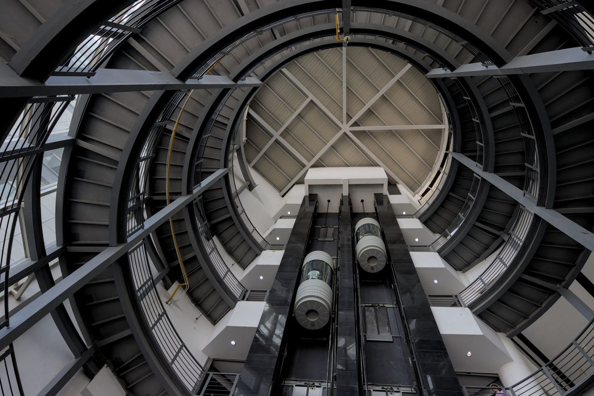
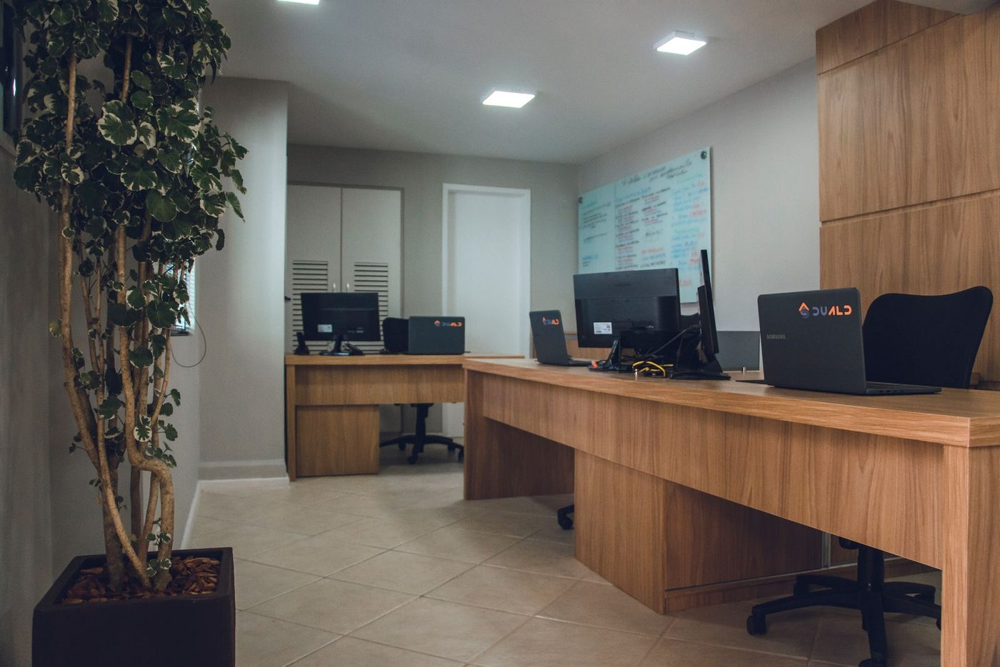
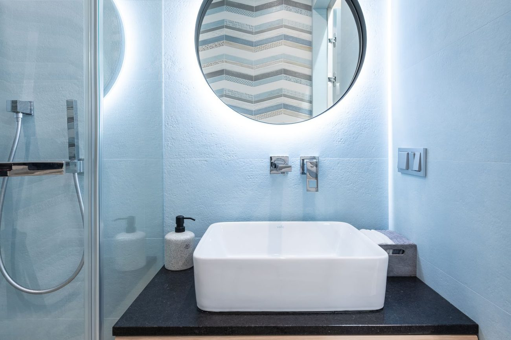
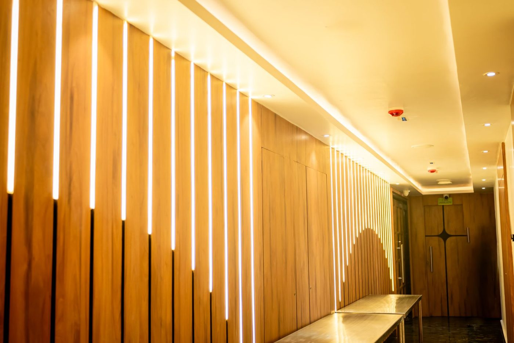
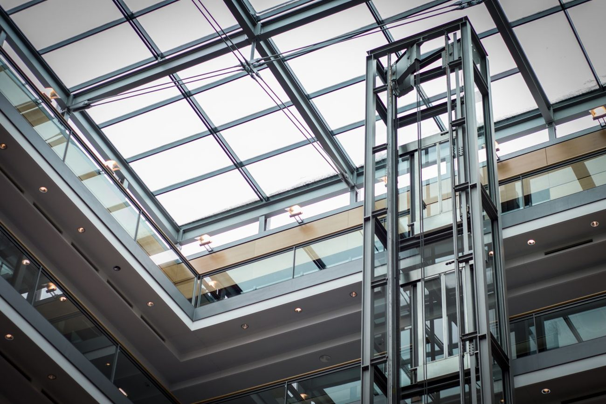
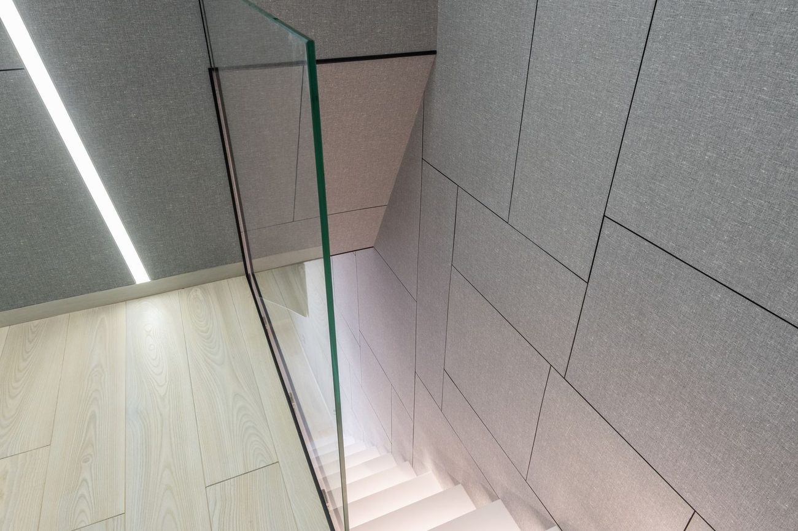
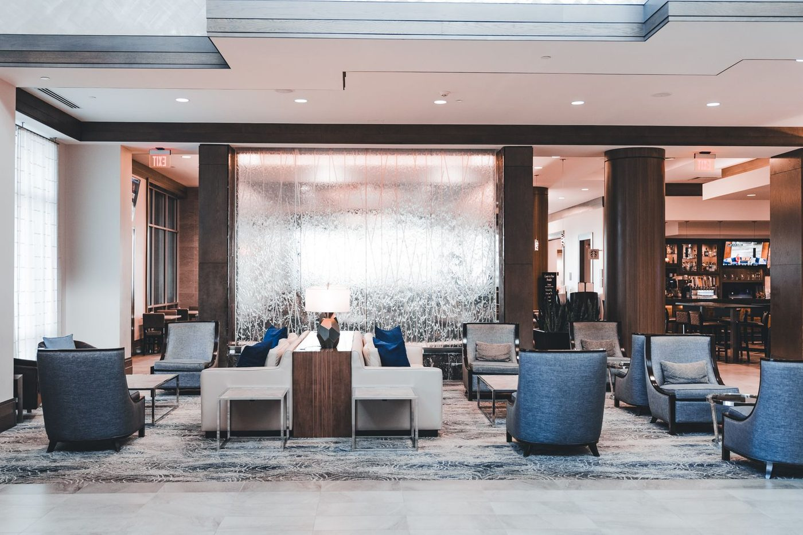
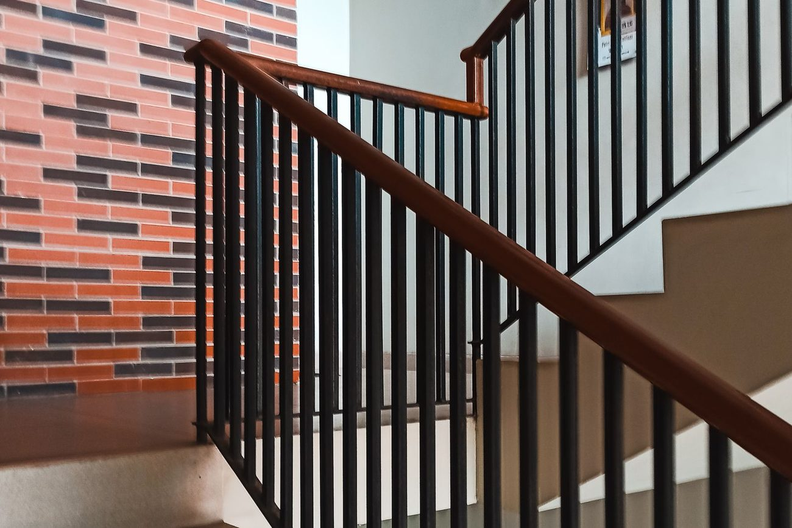
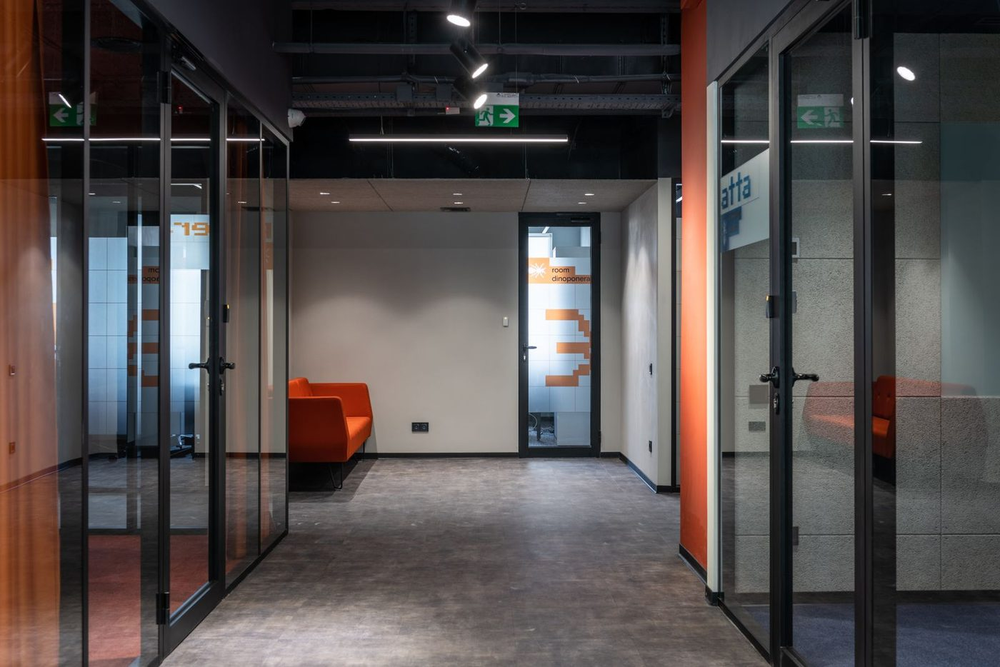
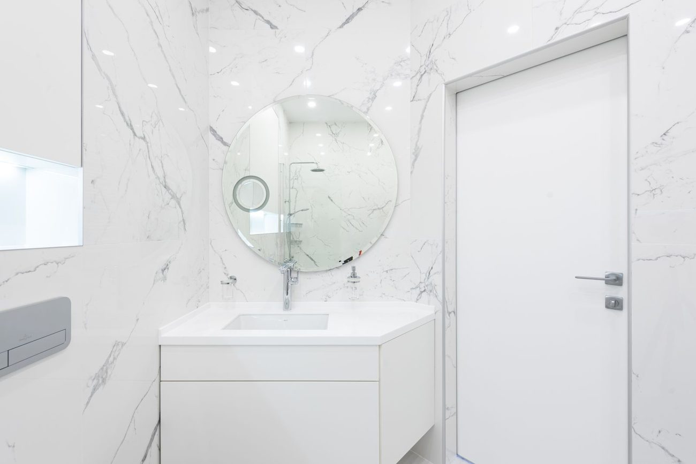

Strefa wind i atriumCzęść wspólna inwestycji

Lada recepcyjnaRecepcja biurowca

Lustro wielkoformatoweStrefa wspólna

Zabudowa ściennaLamele akustyczne

Portal windowyObudowa drzwi windy

Balustrada szklanaKlatka schodowa

Lobby i strefa wejściowaCzęść wspólna
Klatka schodowaWykończenie i balustrada

Okładziny ścienneKlatka schodowa

Przeszklenia i drzwiKorytarz biurowy

Schody i wykończenieStrefa reprezentacyjna

Lustro w strefie wspólnejWykończenie premium
Prezentacja poglądowa zakresu prac. Fotografie ilustrują typy realizacji wykonywanych przez STOLBASZ — gotową dokumentację Państwa inwestycji dołączymy po uzgodnieniu.